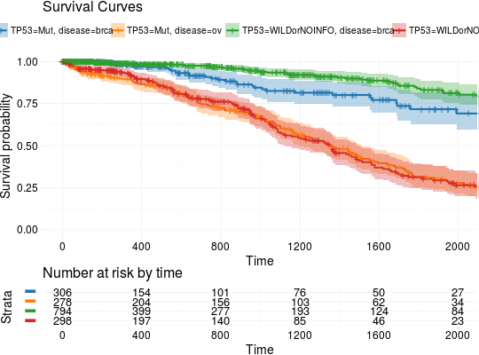

Function gathers mutations over multiple TCGA datasets and extracts mutations and further informations about them for desired genes. See mutations.
mutationsTCGA(..., extract.cols = c("Hugo_Symbol", "Variant_Classification", "bcr_patient_barcode"), extract.names = TRUE, unique = TRUE)
bcr_patient_barcode.
If NULL all columns are returned.....TRUE.Input data.frames should contain column bcr_patient_barcode if extract.cols is specified.
If you have any problems, issues or think that something is missing or is not clear please post an issue on https://github.com/RTCGA/RTCGA/issues.
RTCGA website http://rtcga.github.io/RTCGA/Visualizations.html.
Other RTCGA: RTCGA-package,
boxplotTCGA, checkTCGA,
convertTCGA, createTCGA,
datasetsTCGA, downloadTCGA,
expressionsTCGA, heatmapTCGA,
infoTCGA, installTCGA,
kmTCGA, pcaTCGA,
readTCGA, survivalTCGA,
theme_RTCGA
library(RTCGA.mutations) library(dplyr) mutationsTCGA(BRCA.mutations, OV.mutations) %>% filter(Hugo_Symbol == 'TP53') %>% filter(substr(bcr_patient_barcode, 14, 15) == "01") %>% # cancer tissue mutate(bcr_patient_barcode = substr(bcr_patient_barcode, 1, 12)) -> BRCA_OV.mutations library(RTCGA.clinical) survivalTCGA(BRCA.clinical, OV.clinical, extract.cols = "admin.disease_code") %>% rename(disease = admin.disease_code)-> BRCA_OV.clinical BRCA_OV.clinical %>% left_join(BRCA_OV.mutations, by = "bcr_patient_barcode") %>% mutate(TP53 = ifelse(!is.na(Variant_Classification), "Mut", "WILDorNOINFO")) -> BRCA_OV.clinical_mutations BRCA_OV.clinical_mutations %>% select(times, patient.vital_status, disease, TP53) -> BRCA_OV.2plot kmTCGA(BRCA_OV.2plot, explanatory.names = c("TP53", "disease"), break.time.by = 400, xlim = c(0,2000))